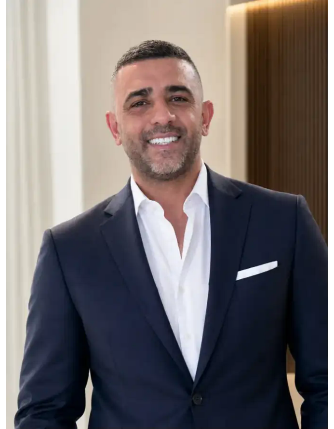

2006
שירות קרבי — חיל השריון, חטיבה 188
שירות כלוחם בחיל השריון.
מה זה בנה ביאחריות, עבודת צוות, עמידה בלחץ והבנה שבסוף משימה נמדדת בביצוע.
שני עשורים של חינוך, ניהול, יזמות ועשייה ציבורית — בבניית מערכים, הובלת אנשים והפיכת רעיונות לתוצאות בשטח.


לא רשימת תפקידים — דרך שנבנתה מהוראה ושליחות, דרך שטח ושיווק, ועד הקמת חברות וניהול מערכות רחבות היקף.
שירות כלוחם בחיל השריון.
שליחות חינוכית במסגרת הסוכנות היהודית, הוראת יהדות וישראל לתלמידי כיתות ז׳–י׳.
עבודה בעולם השיווק והקד״מ על פעילויות מסחריות ומותגים.
ניהול אזור גני ילדים בפתח תקווה, ליווי צוותים, גיוס והכשרה, תפעול וספקים.
שלב נוסף בחיבור שבין חינוך, הדרכה, אנשים והובלת פעילות.
הקמה וניהול של חברה בתחום החינוך בהיקפים גדולים.
הקמה וניהול של מערכי צהרונים, קייטנות ושירותי חינוך עבור רשויות מקומיות.
חיבור הניסיון הניהולי מהשטח לכלים חדשים שמאפשרים לבנות מערכות טובות ומהירות יותר.
במקביל לקריירה הניהולית השתלבתי לאורך השנים במערכות בחירות, מטות ויוזמות ציבוריות. בכל פעם תחום אחריות אחר — אותו דפוס עבודה.
פעילים, מתפקדים, חברי מרכז, ספרי בוחרים, מיפוי קהלים וערים והנעת שטח.
אחריות משמעותית על מערך הדיגיטל במסגרת סיעת נח״ל והבחירות בהסתדרות המורים.
ליווי קמפיין מוניציפלי ואחריות על פעילות הפייסבוק והדיגיטל.
אחריות על הפעילות מול הציבור הדתי במסגרת ההתארגנות הארצית של העצמאים.
תוכן ודיגיטל: סרטונים, צילום ועריכה, TikTok ורשתות חברתיות.
יכולת להיכנס לצוות קיים, להבין מהר את היעד, לקבל תחום אחריות ולסגור ביצוע.
השורשים, המשפחה, השליחות במלבורן, היזמות והגישה הניהולית.
ייעוץ, שיתוף פעולה או מהלך שצריך להפוך מתכנון לביצוע.
amitai3386@gmail.com